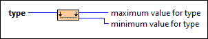
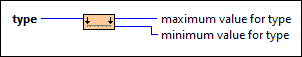

Range Limits for Type VI
Owning Palette: Numeric VIs and Functions
Requires: Base Development System
Returns the maximum and minimum values of the input data type.

 Add to the block diagram Add to the block diagram |
 Find on the palette Find on the palette |
Owning Palette: Numeric VIs and Functions
Requires: Base Development System
Returns the maximum and minimum values of the input data type.

| Add to the block diagram |
Find on the palette |